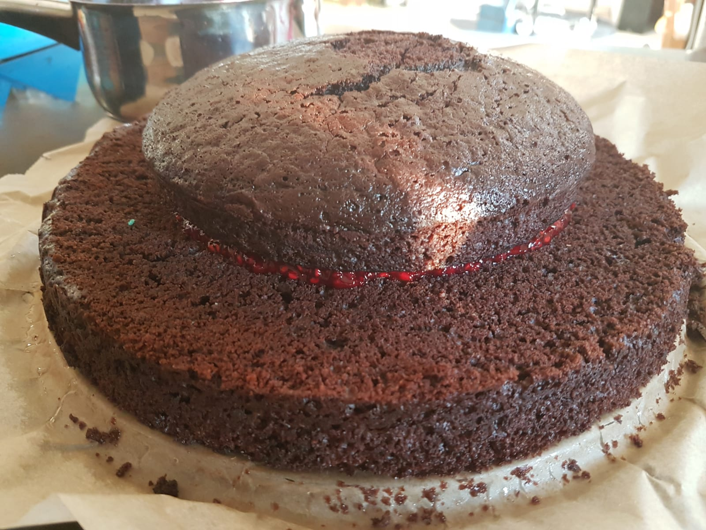

Schoko-Ölkuchen
Backzeit: 25-30 min
Zubereitungszeit: 10 min
Für zwei 26" Springformen gedacht.
Bleibt auch nach drei Tagen noch fluffig und lecker.

- 390g Weizenmehl
- 400g Zucker
- 68g Backkakaopulver
- 1Pck Backpulver
- 1TL Salz
- 2TL Vanilleextrakt
- 150g Sonnenblumenöl (ursprünglich im Rezept Olivenöl)
- 480ml Wasser
- Ofen auf 175°C Ober- und Unterhitze vorheizen
- Mehl, Zucker, Kakao, Backpulver und Salz durchsieben, vermischen
- In der Schüssel eine Kuhle bilden, Vanilleextrakt, Öl und Wasser dazu geben
- Gut verrühren
- Teig in die beiden Formen geben
- Formen in den Ofen geben, nach 15 min Position tauschen, sonst braucht der untere Kuchen länger
- Vollständig abkühlen lassen und erst dann aus der Form lösen